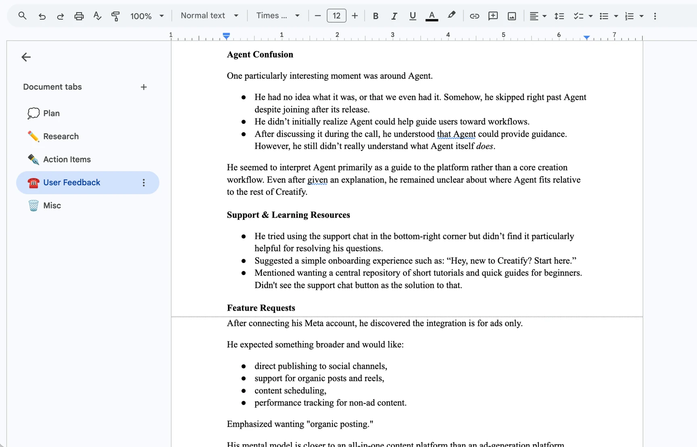
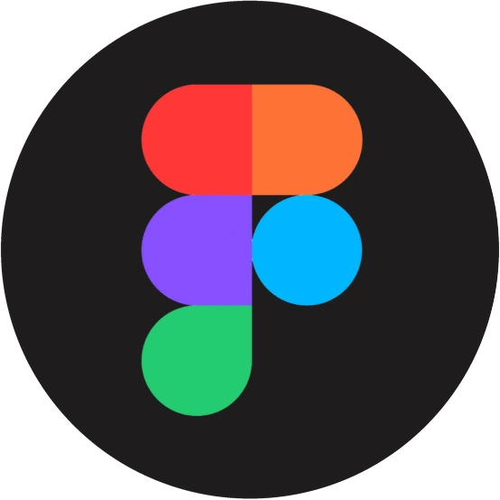
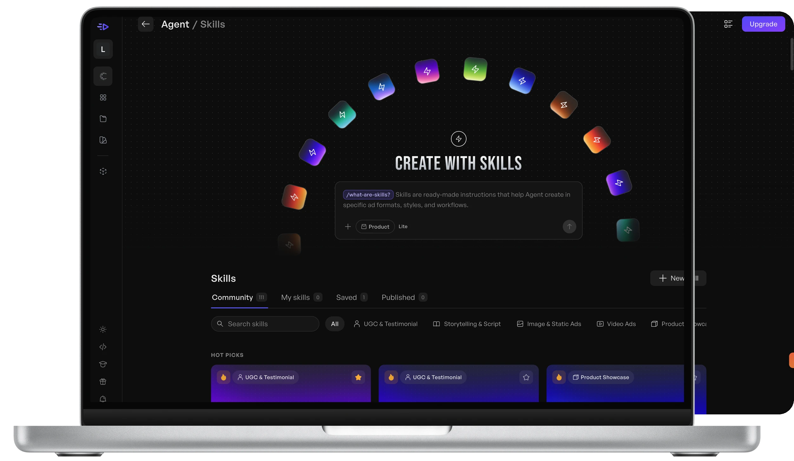

Agent ecosystem designed—then
redesigned.
Creatify
Rethinking how users discover and navigate Creatify’s AI Agent—redesigning Skills, structuring complex AI workflows, and exploring a more discoverable homepage experience.
Get the highlights.
33 conversations with real Creatify
users.



“I want to know how many credits this will use before I generate.”
“A tutorial would be really helpful.”
“I wasn’t sure what Agent did.”
“It looks cool—there’s just a lot going on at once.”
“The results look so human compared to other tools.”
“I wish I had more control over the final output.”
Designed it. Coded it. Shipped it.

38% more Agent Skill sessions post-launch.

01
Designing discoverability
As Creatify’s sole product design intern, I redesigned how users discover and use Agent—across Skills, in-chat workflows, navigation, and its homepage.
I also stepped into design engineering, moving from Figma into production code to implement, open PRs, and ship live.
Product Design Intern
May – Aug 2026
Figma
VS Code, GitHub
Posthog
Notion

The problem
Agent could do a lot. Users couldn’t always see it.
As Agent became more capable, the product faced a different problem: users couldn’t always see or understand what it could do.
Skills were hidden behind unfamiliar interactions. Complex workflows needed more guidance than an empty prompt box provided. Agent’s own navigation competed with the rest of Creatify, and different product areas had drifted into noticeably different visual languages.
Image · Large · 16:9
The original Agent experience (before), with 3–4 numbered callouts: unlabeled + menu, / command, empty prompt box, competing sidebars.
How might we
make Agent’s capabilities easier to discover and understand, while creating a more cohesive and distinctly Creatify experience?
02 — Research
Understanding where users were getting stuck
Before redesigning screens, I wanted to know whether the friction I saw in Agent was isolated or part of broader product behavior. I combined four sources of evidence.
01
PostHog analytics
Funnels, retention, drop-off, feature adoption, onboarding
02
33 user calls
Ecommerce founders, marketers, consultants, creators
03
Competitive research
Higgsfield, Flora, HeyGen, InVideo, Claude, Figma, Arcads
04
Product audit
A hands-on audit of Creatify itself
01 · Behavioral data
Friction showed up across the whole journey
I audited Creatify’s analytics in PostHog across funnels, retention, feature adoption, onboarding, and the major creation workflows. Recurring friction appeared around:
- Choosing the right workflow
- Reaching a successful first generation
- Understanding credit-consuming actions
- Render and download moments
- Subscription and paywall transitions
Image · Medium
PostHog funnel or drop-off chart. Blur exact numbers if they’re sensitive.
02 · 33 user conversations
Three themes stood out
Calls with ecommerce founders, marketers, consultants, creators, and people familiar with competing AI products helped explain what the data was showing.
01
Capabilities were hard to discover
Agent could do sophisticated tasks, but the interface expected users to already know what existed and what to ask for.
02
Generative actions required confidence
Generations cost credits, so users wanted clearer expectations around cost, duration, previews, and warnings before committing.
03
Creatify’s visual identity was an asset
Color and personality were worth refining, not stripping away in pursuit of a generic AI aesthetic.
03 · Competitive research
Higgsfield made capabilities browsable
I studied how AI creative tools expose capabilities, show examples, structure prompting, and onboard new users. Higgsfield was especially relevant: where Creatify treated Skills as commands inside Agent, Higgsfield made comparable capabilities visible and browsable.
For Ad Flow, I ran a deeper comparison with Arcads covering cognitive load, node readability, workflow predictability, template guidance, and navigation.
Image · MediumHiggsfield: Skills as a browsable, visual page
Image · MediumCreatify (before): Skills as a text list inside a menu
04 · Product audit
The same pattern showed up inside Creatify
Skills lived behind an unlabeled + menu or a / command. Feature names appeared with little context. Agent often opened on an empty prompt box, and different product areas used inconsistent visual and interaction patterns.
Image · SmallThe unlabeled + menu
Image · SmallThe / command list with hover-only details
Image · SmallCollage: inconsistent styles across 5 product areas
Make Creatify’s capabilities visible before users have to know to look for them.
03 — Design · Agent Skills
From hidden commands to discoverable capabilities
Agent Skills are specialized workflows for more targeted creative tasks. The original experience had a basic discoverability problem: users first had to know Skills existed.
They could only reach them by typing / or opening an unlabeled + menu. Even then, most information was reduced to a Skill name, with context hidden in small hover states. The interface treated Skills like commands. I wanted to treat them like capabilities users could explore.
GIF · MediumBefore: typing / to find a Skill
GIF · MediumBefore: opening the unlabeled + menu and hovering for details
Before
know→invoke
After
browse→understand→choose→use
V1
Giving Skills a home
The first redesign moved Skills into a dedicated browsing experience:
- A visible Skills entry point
- Search and categories
- More expressive cards and previews
- Standalone Skill detail pages with example outputs
- A direct path back into Agent
Image · Medium · TallV1 Skills gallery, full page
Image · MediumV1 standalone Skill detail page
Image · MediumExample outputs for a Skill
Image · SmallPostHog chart: usage concentrated in a few Skills
After launch
Learning from the first release
I returned to product analytics to see how the experience was actually used. Usage stayed concentrated among a few Skills, while newer ones got less exposure. The standalone detail page also added extra navigation between discovering a Skill and using it.
V2
Tightening the discovery loop
I replaced the standalone detail page with a Skill-detail lightbox, so users could inspect several Skills without leaving the library. I also added clearer page hierarchy, stronger card differentiation, New Arrivals, sticky browsing controls, and more visible example outputs.
GIF · Large · 16:9Hero moment: scrolling the V2 Skills gallery, with New Arrivals, sticky search and categories
GIF · MediumSkill-detail lightbox: open, flip between Skills, then press “Use Skill”
Image · MediumClose-up: card differentiation and richer previews
New loop
discover→inspect→compare→use
~38%
Impact
increase in Skill sessions after launch
Measured across matched seven-day periods. Because this is observational data, not a controlled experiment, I treat it as a post-launch signal rather than proof that the redesign alone caused it.
The process became a loop I used for the rest of the internship
Design→ship→observe→iterate
03 — Design · In-chat workflows
Bringing structure into Agent conversations
Discovering a workflow was only the first step. Some tasks needed several pieces of information before generation, and relying entirely on freeform conversation made them unnecessarily ambiguous.
I designed in-chat setup cards that gather structured inputs like participants, topic, duration, tone, environment, voice, and reference uploads.
GIF · Large · 16:9A setup card appearing in chat: filling in fields, uploading references, then collapsing into a summary
Image · SmallFilled-in card
01
Complete setup
Fill it in yourself for maximum control.
Image · Small“Skip setup” button state
02
Skip setup
Let Agent infer the remaining decisions and generate.
Image · SmallCard with × close
03
Exit with ×
Cancel the workflow entirely.
Image · MediumInput types: host/guest, duration, tone, voice, uploads (up to 10); required vs. optional
Image · MediumAfter completion, inputs collapse into a compact summary card
Conversation when flexibility matters. Interface when precision matters.
The goal wasn’t to replace conversational AI with forms. It was to add structure only where it reduced uncertainty.
03 — Design · Navigation
✓ Shipped
Simplifying Agent navigation
As Agent gained conversations, Skills, Memory, and other controls, its own navigation began competing visually with Creatify’s global sidebar. I compared patterns across Figma, Higgsfield, HeyGen, and Claude, then proposed a contextual rail that kept global navigation accessible while giving Agent history and controls clearer priority.
Image · SmallBefore: two sidebars competing
Image · SmallReference patterns: Figma, Higgsfield, HeyGen, Claude
Image · SmallExplorations, 2–3 options side by side
GIF · Large · 16:9Shipped: the contextual rail expanding and collapsing, with global nav still reachable
Outcome
The team selected the direction and implemented it.
A smaller intervention than Skills, but an important lesson in designing within an existing system: sometimes the answer isn’t adding more navigation. It’s clarifying which layer matters at a given moment.
03 — Design · Visual direction
Defining Agent’s next visual direction
Near the end of my internship, Creatify’s CEO asked me to explore how the five major product areas could feel more visually unified. I began with Agent.
The existing homepage centered on a composer and prompt suggestions. It worked, but it still asked users to understand Agent before Agent had shown much of its range.
Image · Medium · TallBefore: the existing Agent homepage
GIF · MediumDirection A: intro motion + refined gradient
Direction A
Refining the existing model
Kept the familiar chat-first structure and improved hierarchy and personality:
- Introductory motion
- Refined navigation and chat management
- Richer hover interactions
- A more controlled version of Creatify’s gradient language
GIF · MediumDirection B: tabbed inspiration gallery
Direction B
Making capabilities visible
Questioned whether an empty prompt box should be the main introduction to Agent. Instead of asking users to invent a prompt, Agent shows strong outputs by category, so users can start from inspiration.
AllSkillsVideo AdsImage AdsCompetitor Research
Video · Large · 16:9Coded prototype walkthrough (Direction B): switch tabs, hover outputs, start from an example
Discovery should happen before prompting, not only after it.
I built a coded prototype for demonstration. The direction was still exploratory when my internship ended and would need more engineering and backend work before production.
Small moment
Giving Agent a clearer identity
With our lead visual designer, Abed, I worked on a simplified Agent icon. A chat bubble communicates Agent’s conversational role, and the AI sparkle signals generation. The two dots double as an ellipsis and subtle eyes, giving Agent personality while aligning it with Creatify’s simpler iconography.
04 — Beyond Agent
Applying research beyond Agent
The same research threads, especially credit uncertainty and first-time overwhelm, showed up in other parts of the product.
Image · MainSetup modal
Threshold picker
Success state
Credit Auto-Reload
Credit uncertainty surfaced repeatedly in research. I designed an opt-in auto-reload flow covering discovery, threshold and amount setup, confirmation, success, and later management, so sessions aren’t interrupted when balances run low.
Image · MainWalkthrough step 1
Step 2
Step 3
Ad Flow onboarding
First-time users could be overwhelmed by Ad Flow’s canvas. I designed a scalable walkthrough that progressively explains inputs, generation, outputs, and credit-consuming actions instead of exposing everything at once.
Image · MainComparison board
Annotated nodes
Recommendations
Ad Flow workflow research
A side-by-side study with Arcads to reduce cognitive load while keeping Creatify’s stronger guided structure. Recommendations covered node readability, predictability, template discovery, quicker actions, and navigation.
05 — Reflection
What I’m taking with me
01
Discoverability is part of product capability
A powerful feature has limited value if users can’t find it or understand why they should use it.
02
AI interfaces don’t have to be only chat
Cards, galleries, selectors, previews, and forms can make AI systems more understandable without sacrificing conversational flexibility.
03
Analytics belongs inside the design loop
I started using analytics to diagnose problems. By the end, I saw instrumentation as part of the product, planned alongside the interface so future iterations rest on real behavior.
Closing
Creatify already had powerful AI capabilities. My work focused on making them easier to discover, understand, and use.